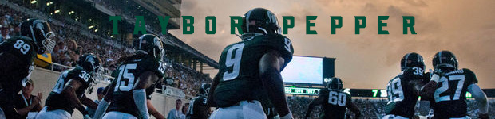

Elevator Pitch: A website dedicated to the happenings of Taybor Pepper’s professional football career and community outreach efforts.
Long Pitch: TayborPepper.com has its focus set on informing interested parties on the history of Taybor’s professional football career. The site will be a place where contact information will be put for those who are interested in getting Taybor to participate in speaking engagements, community service events, or if NFL teams are trying to get in contact with him. There is the ability to have posts similar to those found on a blog if needed. Overall the website will be a place where people can learn about Taybor’s football career.
Jane the Reporter  Interested on writing a news story and needs information.
Interested on writing a news story and needs information.
Jim the Agent  Interested in representing Taybor for business endeavors.
Interested in representing Taybor for business endeavors.
Steven the Fan A football fan that wants to learn.